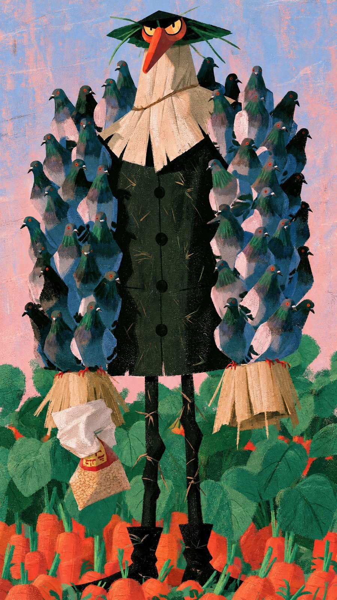
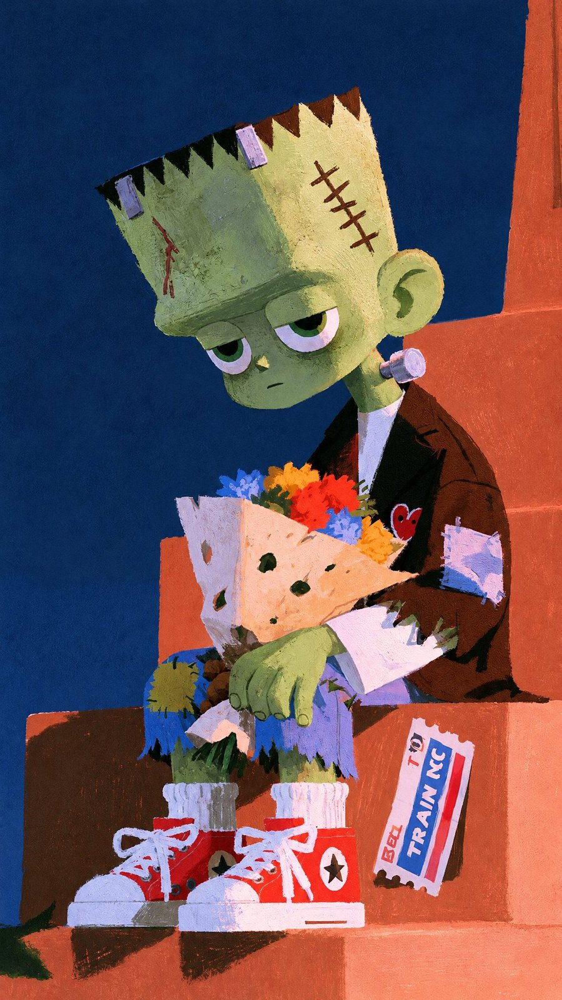

 守夜的稻草人鸽子外套的稻草人、手捧花束的科学怪人、祈祷的修女，用粗粝的色块与剪纸感画成怪诞人物组画。 观看原作 X ↗ 作者AlexandrIA @AleRVG平台X模型Midjourney点赞162发布2026-10-28画风水彩绘本地域氛围欧洲题材奇幻神话情绪诡异不安镜头技法角色一致性提示词 · 来自正文--sref 1225083362 3174123107::0.7 3291766503::0.5 4069215515::0.3 2179082899